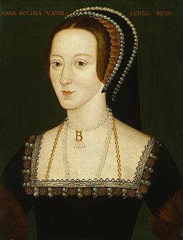

Sanh vào năm 1507 [1] ở Anh Quốc trong một gia đình giòng họ de Norfolk,được nuôi dưỡng một gia đình quý tộc ở vùng Pays Bas.
Năm cô 15 tuổi, được gọi về London, nhân dịp một dạ hội, được nhà vua trông thấy và để ý, mê say.

Nhà vua tỏ ngay tình yêu, nhưng Anne lễ phép duyên dáng chối từ:
- Tâu Bệ hạ, em không thể làm tình nhân của Bệ hạ được, mặc dầu đó là một vinh dự lớn lao cho đời em.
- Em muốn làm Hoàng hậu không?
Anne Boleyn mỉm cười e lệ:
- Bệ hạ cho phép em suy nghĩ kỹ một thời gian đã.
Đêm ấy, vua Henri VIII quyết định ly dị Hoàng Hậu Catherine d’ Aragon, để cưới Anne Boleyn. Nhưng đây là cả một vấn đề rắc rối khó khăn, đụng chạm đến luật pháp của Thiên chúa giáo, và sẽ có ảnh hưởng phiền phức đến chính trị trong nước, đến cả chính trị Âu châu.
Và sự phiền phức về tôn giáo quả thật đã gây ra một biến cố vô cùng quan trọng: sự ly khai giữa nước Anh và Tòa thánh La Mã.
Trong lúc nhà vua thách đố đức Giáo hoàng: ông này không cho phép vua ly dị Hoàng hậu theo luật pháp của đạo Thiên chúa, trong lúc Henri VIII cương quyết từ bỏ cả Giáo hoàng và tự lập riêng quyền bá chủ của Thiên chúa giáo Anh quốc, để được tự do ly dị Catherrine và cưới Anne Boleyn, thì cô con gái 15 tuổi của ông Đô trưởng lại chơi cái trò cút bắt với nhà vua…Khi biến, khi hiện, khi chịu, khi không, khi giận hờn, khi nhõng nhẽo, nàng làm cho trái tim vua như bị phong ba bão tố, đầu óc vua như điên đảo tang thương, gây ra tiếng vang dội ly kỳ hồi hộp, náo động khắp các kinh đô Âu châu,
Lúc bấy giờ là năm 1527. Từ Paris đến Moscou, từ Stockholm đến Barcelone, đến Madrid, đến Rome. Đâu đâu cũng bàn tán xì xầm mấy câu hỏi:
- Đức Giáo hoàng Clément VII sẽ nhượng bộ Anh hoàng Henri VIII không?
- Anh hoàng sẽ dám chống lại Tòa Thánh Vatican và ly khai với vị giáo chủ tối cao của Thiên chúa giáo không?
- Anne Boleyn sẽ ưng thuận lấy vua và lên chiếm ngôi Hoàng hậu Anh quốc không?
- Henri VIII sẽ ly dị được Hoàng hậu Catherine không?
Toàn thể Âu châu hồi hộp đợi chờ và cuộc diện tôn giáo, chính trị của Âu châu sắp sửa có gì thay đổi quan trọng vì một cô gái đẹp 15 tuổi.
YÊU NHAU LẮM…CẮN NHAU ĐAU
“Con rắn bé cưng của Trẫm!” “Cái đồ ngọt ngọt chua chua của trẫm”, “Vị thuốc độc mê say của tram!”. Đây là những câu mà vua Henri VIII thường dùng để nói với Anne Boleyn, cô gái kiều diễm 15 tuổi, tình nhân của vua. Có khi vua gọi bằng tên tắt, thân yêu hơn: “Nane”. Một buổi, Nane vào cung điện thăm vua. Đang đứng nói chuyện, cô nhõng nhẽo kêu:
- Ô, sao tự nhiên em nghẹt thở thế này?
Nhà vua vội vàng đến gần xoắn xít hỏi:
- Làm sao? Làm sao? Em làm sao thế?
Nane giả vờ thở khó khăn, và khẽ bảo:
- Bệ hạ cởi hộ cái cooc xê cho em, để em dễ thở một tý.
Henri VIII sung sướng thò tay vào người Anne Boleyn để cởi cái corset. Lớp vải yếm tụt xuống, để lộ ra hai vai và nửa thân người thiếu nữ trắng như ngà và mát rượi, thơm ngát. Dưới làn áo sơ mi mỏng, nhà vua thấy rõ bộ ngực của mỹ nhân, vun tròn và thu hút. Vua tưởng đâu sẽ chiếm được dễ dàng tấm thân quý báu ấy, nhưng Anne Boleyn cười rũ rượi chạy đi trốn. Nhà vua bụng phệ, chạy đuổi theo, thở ồng ộc. Khi đuổi bắt được người yêu, nàng quỷ quái quỳ xuống chân vua, tâu:
- Xin Bệ hạ, tha lỗi cho em. Em là con gái còn trong trắng. Em chỉ trao thân hèn này cho người nào mà em yêu cơ!
- Thế nghĩa là Nane không yêu Trẫm sao?
- Tâu Bệ hạ kẻ tiện nữ này thường tâu với bệ hạ rằng nó nhất định trong đời nó sẽ không làm một điều gì tội lỗi. Trong lúc bệ hạ đã có vợ rồi, mặc dù em có yêu bệ hạ thế mấy đi nữa, nhưng nếu em dâng cái xác phàm này cho bệ hạ thì hóa ra em là kẻ xúi giục Bệ hạ phạm tội thông dâm? Thật em không dám.
Henri VIII hết van vỉ đến ỉ ôi, hết khẩn khoản cầu xin đến hăm he dọa nạt, nhưng Anne Boleyn vẫn một mực chối từ. Anh hoàng đành chịu thua cô con gái ông Đô trưởng.
Một hôm, trong bữa tiệc có đông đủ triều thần, và các vị đại sứ cùng các quí phu nhân, nhà vua bảo Anne Boleyn:
- Nếu Nane không tuân lịnh Trẫm, Trẫm sẽ truyền lịnh bắt Nane giam vào Tháp London.
Nghe nói sẽ bị bắt nhốt trong Tháp London là nơi mà ai vào đấy chỉ còn chờ cái chết mà thôi, Anne Boleyn rầu rầu nét mặt, và để cho vua thấy hai hàng châu lệ ứa tuôn trên đôi má ửng đào. Vua lại gần, bảo:
- Nane sợ?
- Bệ hạ không thương em nên mới hăm dọa em như thế. Nhưng thà em chết chứ em không thể làm vừa lòng bệ hạ.
Nhà vua tức mình, không biết nói sao được, bèn quay lại kiếm chuyện la mắng các vị bộ trưởng, và cầm cả cây gươm đạp vào những con chó của ngài.
Về phòng riêng, lần này nhà vua quyết định ly dị Catherine d’Aragon để cưới cho được Anne Boleyn. Ông ngồi lại bàn, viết bức thư cho cô gái đẹp. Ông rán chải chuốt câu văn, thành bức thư tình tư sau đây:
“Nếu em vui lòng làm tròn bổn phận của một người yêu trung thành và hiến cả tâm hồn lẫn thể xác cho trẫm, trẫm xin hứa với em rằng trẫm sẽ đuổi ra khỏi tâm tư cũa trẫm, ra khỏi tình yêu mến của trẫm tất cả những người đàn bà nào ganh ghét em.”
Anne Boleyn khoái lắm. Cô hãnh diện, vì mới có 15 tuổi mà được nhà vua có uy thế nhất ở Âu châu quỳ bên chân cô, van xin cô một tình yêu. Nhưng cô nhất định giữ ngọc gìn vàng, chỉ chịu hiến thân cho vua khi nào cô sẽ là chính thức Hoàng hậu nước Anh mà thôi. Vua mà còn có vợ, thì không bao giờ cô chịu mất trinh cho vua.
Trước thái độ cương quyết chối từ của Anne Boleyn, không những Henri VIII không giận nữa mà nhà vua lại càng say mê cô hơn. Nhà vua khen thầm rằng con gái mà biết giữ gìn đạo đức như thế sẽ là người vợ trung thành duy nhất. Người vợ như thế mới xứng đáng làm Hoàng hậu! Anne Boleyn yêu quý của vua “con rắn bé cưng của trẫm”, đâu phải là thứ đàn bà con gái lăng loan, mất nết! Với vua mà cô còn quyết liệt giữ gìn phẩm giá nghìn vàng như thế, thì cô mới sẽ xứng là mẫu nghi thiên hạ!
Để cho vui lòng Nane, thôi thì nhà vua mở tiệc mở tùng, kế tiếp những đêm dạ hội, liên hoan, đờn ca hát xướng, vui say nhộn nhịp cả cung điện Buckingham đêm này qua đêm khá. Nhưng Hoàng hậu Catherrine còn đấy. Bà mỗi ngày mỗi già, mỗi xấu mà không sinh được một hoàng nam nào cả. Anne Boleyn thì trái lại, cứ còn trẻ mãi, đẹp lộng lẫy mãi, và tính tình vui vẻ mãi. Nàng lại chỉ mặc một màu áo trắng, để phô trương rằng nàng hãy còn ngây thơ trong sạch, mặc dầu là người yêu của Hoàng thượng, nhưng vẫn là một tiên nữ ngào ngạt hương trinh.
Lần cuối cùng, nhà vua hỏi ý kiến các vị cố vấn vì lâu nay nhà vua còn do dự bởi lẽ nếu từ bỏ Hoàng hậu Catherine d’ Aragon là người dòng họ với Hoàng đế Charles Quint của Đức, thì thế nào cũng sẽ có sự gây gổ và thù oán giữa Hoàng đế Đức và Anh hoàng. Vua xứ Espagne cũng sẽ tức giận và có thể tuyệt giao với Anh, vì Catherine là một công chúa cưng của xứ Espagne.
Toàn dân Âu châu theo đạo Gia tô sẽ phản kháng nhà vua sao không theo luật Đại cấm ly dị vợ, và cấm lấy nhiều vợ. Nhưng Henri VIII cười bảo:
- Vậy chứ trong Thánh Kinh (La Bible) các vị David, Salomon, Abraham, Jacob đều theo chế độ đa thế đó thì sao?
Rốt cuộc vua Henri VIII chính thức xin Giáo hoàng Clément VII cho phép vua ly dị Catherine d’ Aragon. Giáo hoàng do dự, không quyết định. Nhưng dưới áp lực của dư luận các triều đình Âu châu và của Hoàng hậu Catherine Aragon thống thiết van lơn giáo hoàng đừng nhượng bộ, Clément VII không chấp thuận cho Henri VIII ly dị.
Sự từ chối chính đáng của Giáo hoàng quyết giữ đúng theo phép Đạo, lại chính là đóm lửa châm vào ngòi thuốc sung của Henri VIII. Cơn thịnh nộ của Anh hoàng nổ bùng lên ghê gớm, không có gì ngăn cản được nữa. Nhà vua quá yêu Anne Boleyn, quyết cưới cô cho kỳ được. Mà muốn cưới cô, trước hết phải ly dị Catherine. Giáo hoàng cho phép Đạo không chấp thuận cho nhà vua ly dị, thì nhà vua ly khai cả với Tòa Thánh La Mã. Đức Hồng Y Giáo chủ Wolsey, đại diện của Giáo hoàng tại Anh quốc, bị vua đuổi ra khỏi nhà thờ, các của cái sự nghiệp của Hồng Y ở London đều bị nhà vua tịch biên và niêm phong. Nhà vua ký sắc lệnh bắt bỏ tù Hồng Y Giáo Chủ về tội làm gián điệp.
Ngày 27.11.1530, Hồng Y Wolsev, người đẫy đà to béo, mà vì bị xúc động quá mạnh, bị nhục nhã, bị nguyền rủa, đã lăn ra chết không kịp thở. Cũng may là ông thoát khỏi được tội chết chém vì vua Henri VIII đã sửa soạn kết án tử hình vị Hồng y đại diện tối cao của Tòa thánh Vatican…
Kế đó, nghe theo lời xúi giục của vị cố vấn Cromwell một tay chính trị đại mưu lược, đại gian hùng, vua Henri VIII thiết lập riêng Giáo Phái Anh quốc (Eglise Anglicane) mà chính vua tự suy tôn làm Giáo chủ, biệt lặp hẳn với Tòa thánh La Mã. Bao nhiêu luật Thiên chúa giáo do Tòa thành đã ban ra đều bị vua Henri VIII sửa đổi hết, để áp dụng những luật lệ riêng cho giáo phái Anh quốc.
Anne Boleyn bây giờ tuy chưa chính thức lên ngôi, nhưng cũng đã được triều đình suy tôn như Hoàng hậu. Cô đã có chửa và thúc giục vua Henri VIII gấp rút sắp đặt cuộc hôn nhân. Catherine d’ Aragon phải tự ý bỏ cung điện trốn ra ngoài…
THÀ TRẪM ĐI ĂN MÀY ĂN XIN. CHỨ KHÔNG BAO GIỜ TRẪM BỎ KHANH
Anne Boleyn có thai cuối năm 1532, nhưng mãi đến tháng 6 năm 1533, hôn lễ mới chính thức cử hành, và Anne Boleyn được tôn lên ngôi Hoàng hậu trong một buổi lễ cực kỳ long trọng tại nhà thờ Westminster. Dân chúng nô nức đi xem đông nghẹt cả hai bên đường phố. Súng đại bác bắn chào mừng tân Hoàng hậu, nổ ầm ầm suốt ngày làm chim bồ câu bay tán loạn trên vòm trời London, và rung rinh cửa kiếng các lâu đài trong thành phố. Hoàng hậu “mang bầu” đã bảy tháng, nhưng vẫn hãnh diện ôm cái bụng bự ngồi xe tứ mã đi từ nhà thờ trở về cung điện, qua các đường phố lớn.
Nhưng dân chúng chỉ hoan hô”: “Lậy chúa phù hộ cho vua!” – God save the King – mà không có một lời hoan hô Hoàng hậu. Xe đang lăn bánh chậm chậm trên đường, bỗng Hoàng hậu muốc ọc mửa. Các bà mệnh phụ vội vã đưa ra một tấm lụa trắng tinh, để Hoàng hậu nôn ngay vào đấy.
Trở về cung, vua Henri VIII đã cho gọi một chiêm tinh gia danh tiếng đến để xem tuổi của Hoàng hậu và tuổi của vua có hợp nhau không và Hoàng hậu sẽ sinh trai hay gái…Nhà vua cười bảo ông thầy tướng số:
- Trẫm thích có con trai để kế nghiệp, chứ trẫm ghét có con gái.
Nhà chiêm tinh quả quyết:
- Tâu Bệ hạ, tuổi của Bệ hạ và của Hoàng hậu hợp nhau lắm, và chắc chắn Hoàng hậu sẽ sinh hoàng nam.
Nhưng ngày 7 tháng 9, Hoàng hậu sinh một công chúa. Vua Henri VIII nổi giận, đòi bắt chém đầu anh thầy bói. Nhưng rồi trông thấy Anne Boleyn khóc lóc thê thảm, vua làm lành trở lại. Anne Boleyn hỏi:
- Hoàng thượng có ghét bỏ em không?
- Không, thà trẫm đi ăn mày ăn xin, chứ không đời nào trẫm bỏ khanh.
Lời thề thốt của nhà vua si tình, kể cũng đã thật là mùi mẫn, thật là tha thiết, mê ly, nhưng các bạn sẽ ghét bỏ mà còn bị kết tội chết chém trên sân cỏ trước ngục tháp London.
BỊ MẤT ĐẦU HOÀNG HẬU MỚI 35 TUỔI.
Công chúa đầu lòng được đặt trên là Elisabeth, chính là Anh hậu Elisabeth I rất tài giỏi sau này.
Sinh ra Elisabeth, Anne Boleyn không còn được nhà vua cưng như trước. Bị các triều đình Âu châu chế nhạo, vua Henri VIII bắt đầu nhận thấy rằng Anne Boleyn chỉ có sắc đẹp son trẻ, chứ tính nết rất là hư hỏng. Hay mưu mô, xảo quyệt, lúc vui thì cười đùa như trẻ con, lúc không vừa ý thì đổ cộc và đôi khi dám hỗn với vua Henri VIII đã chán bỏ dần dần nàng Hoàng hậu trẻ tuổi mà trước đó một năm, vì yêu nàng, vua đã từ bỏ cả Tòa Thánh La Mã và Đức Giáo Hoàng. Đôi khi, trước mặt cả triều đình, Anne Boleyn dám gây gổ với vua và làm vẻ giận dữ. Vua im lặng. Nhưng triều đình tôn kính vua, đã có vài vị quý tộc tức giận Anne, bắt đầu vận động để làm hại Anne. Thủ tướng Cromwell đã đặt mưu kế đưa vào một lũ cận thần để hầu hạ Hoàng hậu, toàn là bọn thanh niên đẹp trai. Bọn này bầy ra các cuộc chơi để giải trí Hoàng hậu và suốt ngày tìm đủ cách để quyến rũ nàng…Vua Henri VIII vẫn không nói gì, và Anne lại có thai lần thứ hai. Trong lúc ấy, các bà mệnh phụ, vợ các quan triều thần, và chính gia đình của vua cũng tìm cách giới thiệu cho vua một thiếu nữ 25 tuổi, hiền lành, lễ phép, có giáo dục, tên là JANE SEYMOUR.
Jane Seymour không đẹp bằng Anne Boleyn, nhưng tính tình điềm đạm, nhu mì, không thô cộc và nóng nảy như Anne, cho nên được vua Henri VIII yêu và được ra vào tự do trong cung điện.
Tháng 9 – 1534, Anne Boleyn lại sinh ra một hài nhi chết yểu.
Vua Henri VIII cứ thắc mắc lo sợ, Phải chăng Chúa trời đầy đọa vua cho nên mới xui khiến vua gặp phải Anne và lấy nàng làm Hoàng hậu?
Thủ tướng Thomas Cromwell chọn ngay lúc này để làm hại Anne Boleyn. Ông phúc trình lên vua những điều tra bí mật của ban trinh thám về Hoàng hậu và các chàng cận vệ đẹp trai. Rồi thủ tướng truyền lịnh bắt giam người anh ruột của hoàng hậu là Georges Boleyn, người này thường bày đặt xúi giục Anne làm chuyện này chuyện nọ có hại đến uy tín của vua. Mấy chàng thanh niên hầu cận của Anne cũng bị bắt để tra tấn. Trong đám này có nhạc sĩ trẻ tuổi Mark, người được Anne yêu mến nhất, khai rõ hết những hành động của Anne, cả những đêm mà Anne lén vua để tiếp chàng trên giường ngủ.
Hai vị quan tòa áo đỏ chứng kiến cuộc tra tấn khủng khiếp ấy dưới ánh sáng của trăm nghìn bó đuốc cháy sáng rực trong sân tòa án. Theo lệnh của Thủ tướng, người ta giấu không cho Anne biết một tí gì về các vụ tra tấn những người đồng lõa với Anne. Nàng vẫn kiêu căng, hãnh diện chủ tọa các buổi lễ, hoặc đi xe tứ mã dạo chơi ngoài phố. Nhưng đi đến đâu, nàng cũng thấy dân chúng không chào nàng, và còn tìm cách xa lánh nàng. Chuyện của Hoàng hậu trong cung điện mà ngoài dân chúng đồn đãi với nhau biết hết. Toàn thể thủ đô London đều ghét nàng. Nàng trở về cung, gây gổ với vua, với những lời nặng làm tổn thương danh dự của đấng Anh hoàng. Vua Henri VIII là người có học thức và có giáo dục, vẫn nhã nhặn, ít nói không mấy khi trả lời lại những lời đanh đá và hỗn xược của Anne Boleyn.
Rồi hai tuần sau, Thủ tướng Thomas Cromwell tâu lên vua tờ phúc bẩm xin vua cho bắt Anne Boleyn giam trong tháp London. Bấy giờ nàng mới biết rằng Triều đình cũng thù ghét nàng, nàng quay lại mỉm cười nhìn vua, xin vua lấy uy quyền mà che chở cho nàng. Nhưng vua Henri VIII điềm nhiên, cứ yên lặng để mặc cho quân lính bắt trói nàng đem đi. Tòa án buộc Anne Boleyn hai tội nặng:
- Nói hỗn với vua, phạm đến uy tín của vua.
- Thông dâm với bọn quan hầu.
Tòa tâu lên vua xin kết án như thế nào. Vua nghiêm khắc truyền lịnh:
- Các ông cứ xử đúng theo pháp luật.
Ngày 18.5.1536 tòa xử Anne Boleyn mất chức Hoàng hậu và bị chặt đầu.
Anne Boleyn khóc sướt mướt, quay lại tâu xin vua một thỉnh nguyện cuối cùng:
- Xin Hoàng thượng săn sóc Elisabeth, con gái 3 tuổi của tôi.
Vua nghiêm nghị bảo:
- Mi là người đàn bà vô giáo dục, hỗn xược, không xứng đáng làm mẹ Elisabeth.
Dân chúng đứng đông nghẹt chung quanh công trường Tháp London, chờ xem Anne Boleyn bị chặt đầu. Toàn thể reo to lên:
- Lạy Chúa phù hộ Vua! (God save the King!) Lạy Chúa phù hộ Vua!
Đó là một lời hoan hô Vua và kết tội Anne Boleyn.
Anne Boleyn quỳ xuống, để cái đầu vào thớt gỗ, vừa mở miện để niệm Kinh cầu Chúa thì bị lát dao của đao phủ phập xuống một cái, đầu nàng lìa khỏi cổ, rơi xuống thùng bột cưa. Dân chúng lại vui mừng reo lên:
- God save the King!
Ngày hôm sau, vua Henri VIII cử hành hôn lễ với Jane Seymour.
Chú thích:
[1] Có sách ghi bà sanh ngày 1501 hay 1507